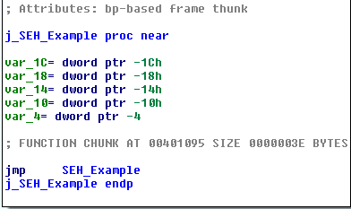

Loading and Linking
Objectives
- Understand, at a high level, the process of loading and running executables
- Understand some of the actions performed by the C Runtime (CRT) during initialization
What Happens at Load Time
- File gets mapped into memory
- (PE) Relocations get fixed up
- Imports get resolved
- Entry point gets called (if applicable)
Dynamic Libraries
- Dynamic Link Libraries (DLLs) and Shared Objects (SOs) typically provide shared functionality
- glibc (*nix)
- Kernel32/KERNELBASE/ntdll (Windows)
- Dynamic (NOT runtime) linking implies a dependency
- Exported functions from DLLs and SOs generate import table entries
Entry Points
- Typical exported entry points may not necessarily be called "main"
- _start
- _DllMainCRTStartup/_mainCRTStartup
- Other methods - such as TLS callbacks (Windows) may also be invoked
Import Resolution
- Import table entries are resolved
- Copies of required libs provided to process
- Addresses of loaded functions added to table
- Loading fails if imports cannot be satisfied
Some Additional Points
- Often copies of mappings are provided for common libs
- Mappings provided as Copy On Write
- Reduces overhead of process creation/loading process
- Other steps may be accomplished, depending on platform
- Runtime linking allows dynamic checks to see if imports exist or not, without preventing loading
Compilers - Optimizations
Objectives
- Understand and identify a number of optimizations performed by compilers
Jump Tables
- Often produced for switch statements
- A table of offsets to jump to based on the result of a comparison
- Used as an optimization to avoid lots of conditional branches and comparisons
Jump Tables - Example C
switch (x) { case 10: if (NULL == (f = fopen("tmp1.txt", "w"))) { printf("Allocation failed!\n"); goto Cleanup; } fprintf(f, "%s", GetCommandLineA()); break; case 20: MessageBoxA(NULL, "Second option selected!", "TITLE", MB_OK); break; case 30: if (NULL == (f = fopen("tmp2.txt", "w"))) { printf("Opening tmp2 failed!"); goto Cleanup; } fprintf(f, "%d:%s", __COUNTER__, __TIMESTAMP__); break; case 40: case 50: MessageBoxA(NULL, "Last option selected!", "ANOTHER TITLE", MB_OK); default: MessageBoxA(NULL, "Unknown option selected!", "That didn't work!", MB_ICONERROR); }
Jump Tables - Example ASM

Jump Tables - Example ASM (Cont'd)

Function Inlining
- Function code is copied inline each time it is used
- Reduces overhead of function calls at cost of space
- Code is copied rather than reused, resulting in bigger binary
- No additional overhead for calls
Function Inlining - Example C
BOOL __forceinline func1(int x) { return x % 10 ? FALSE : TRUE; } // ... int main(int argc, char** argv) { const char* tmp = func1(atoi(argv[1])) ? "Yes" : "No"; printf("Is the cmdline param a multiple of 10? %s\n", tmp); return 0; }
Function Inlining - Example ASM

Frame Pointer Optimization/Omission
- Tells the compiler not to use the base pointer (EBP/RBP) as normal
- Frees it up to be used as another general purpose register
- Can make debugging more difficult (harder to reason about call stack)
Loop Unrolling
- Instructions within loop body are copied for each iteration
- Larger resulting binary size, but without overhead of branching
A Tale of Duff's Device
- Concept code courtesy of Tom Duff, 1983
- Good case study, though likely no longer significantly performant with modern compilers
- Original requirement involved copying 16-bit units from an array to a memory-mapped register
- Naive approach suffered from performance issues
- Thus, unrolling to blocks of 8 yielded significant improvements
Duff's Device - Initial
send(to, from, count) register short *to, *from; register count; { register n = count / 8; do { *to = *from++; *to = *from++; *to = *from++; *to = *from++; *to = *from++; *to = *from++; *to = *from++; *to = *from++; } while (--n > 0); }
Initial Effort - Issues
- This approach works - with one small problem
- Always assumes that the copy target is evenly divisble by 8
Duff's Device - The Solution
send(to, from, count) register short *to, *from; register count; { register n = (count + 7) / 8; switch (count % 8) { case 0: do { *to = *from++; case 7: *to = *from++; case 6: *to = *from++; case 5: *to = *from++; case 4: *to = *from++; case 3: *to = *from++; case 2: *to = *from++; case 1: *to = *from++; } while (--n > 0); } }
Structured Exception Handling (SEH)
- Provides a mechanism for managing exceptional conditions via C
- Has some semantic differences from C++ style exception handling
- Can allow recovery from events such as:
- Bad memory accesses (e.g., segmentation faults)
- Divide by zero errors
- ...
SEH Examples
char* badptr = NULL; __try { printf("We're trying to do some stuff here...\n"); printf("Bad memory access: %c\n", *badptr); } __except (EXCEPTION_EXECUTE_HANDLER) { printf("An exception occurred! 0x%x\n", GetExceptionCode()); }
Output:
We're trying to do some stuff here... An exception occurred! 0xc0000005
SEH Details
The stack frame disassembly:

SEH Details (cont'd)
SEH Thunk (w/ jump to supporting method):
SEH Details (cont'd)
Exception Handler:

SEH Details (cont'd)
- Stack frame layout is much further complicated with this construct
- Implementation actually varies a bit between VS compiler versions
- Newer SEH versions (such as the one we see here) provide additional buffer overrun protections